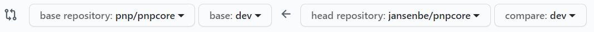

Setting up your environment for developing
Pulling down the source code
The PnP Core SDK source code lives in the https://github.com/pnp/pnpcore repository. If you want contribute to it you'll need to issue pull requests against the dev branch and for doing that you need to first fork the repo:
- Click on the Fork button (top right on the https://github.com/pnp/pnpcore home page)
- Create a fork in your account or organization of choice
- Pull down your forked version via:
- Clicking on the green Code button and copy the git URL
- Ensure you've installed a Git client (e.g. https://git-scm.com/downloads)
- Open your command prompt and navigate to the folder where you want to pull down the source code (e.g. c:\github)
- Pull down your forked repo via
git clone <the copied git url>
If you want to update your forked repo then you can either use the GitHub UI or command line, check out https://medium.com/@sahoosunilkumar/how-to-update-a-fork-in-git-95a7daadc14e for more instructions
Setting up your development environment
I want to use Visual Studio for development
Using Visual Studio requires you to:
- Download and install Visual Studio 2019: https://visualstudio.microsoft.com/free-developer-offers/, ensure that you install at least Visual Studio 2019 version 16.8.0 upwards as PnP Core depends on .NET 5.0
- Ensure you've installed the .NET 5.0 SDK
- Navigate to the
./src/sdkfolder and open the PnP.Core.sln solution
I want to use Visual Studio Code for development
Using Visual Studio Code requires you to:
- Download and install Visual Studio Code: https://visualstudio.microsoft.com/free-developer-offers/
- Ensure you've installed the .NET 5.0 SDK
- Open Visual Studio Code and install these extensions (click on the Extensions button in the vertical toolbar and search for it, then click on the Install link) and close it again once done
- The C# extension (mandatory): this extension brings support for compiling and debugging C#
- The .NET Core Test Explorer (optional): this extension always you to easily navigate the test cases and run a group of test cases
- Navigate to the
./src/sdkfolder, right click and choose Open with Code or alternatively when using command line typecode .
Making changes and testing them
The recommended approach for making changes and testing them is by writing the appropriate unit tests (see the Writing tests article).
Create a PR with your changes
Note
When you want to make changes it's recommended to isolate each change in a separate PR and that's best done by creating a branch per change. Having a branch per change allows you to work on multiple changes while you still can submit them as individual PR's. To create a new branch starting from the dev branch you can use git checkout -b mybranch dev. To push this branch to GitHub you can use git push -u mybranch.
Once you've coded and tested your contribution you'll need to create a pull request (PR) again the dev branch of the https://github.com/pnp/pnpcore repository:
- Go to Pull requests in your fork and click on the green New pull request button
- Ensure you've configured the base repository to be the
pnp/pnpcorerepo using thedevbranch

- Click on Create pull request, provide a descriptive title and description and click on Create pull request
- Ensure all checks have passed